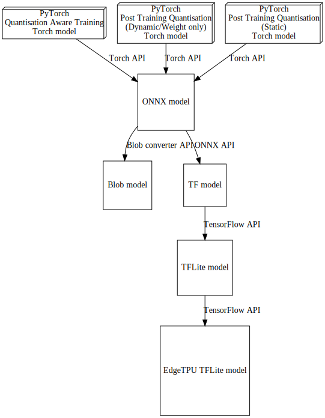
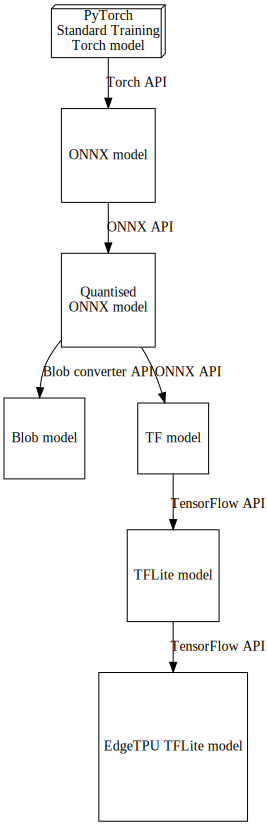

Quantization of Pytorch Models
What is quantization
- Quantization describes methods for carrying out calculations and storing tensors at smaller bit width than floating point precision. The default size of floating point numbers are 32 bits.
- For instance, quantizing the deep learning model means, converting the 32-bit floating point numbers (of weights & activation outputs) to 8-bit integers.
Types of quantization
- Post Training Quantization (PTQ)
- Static
- Dynamic/Weight only
- Quantization Aware Training (QAT)
- Static
| Pros | Cons |
|---|---|
| Model gets smaller | Potential for little degradation in accuracy |
| Reduced memory usage during inferencing | |
| Improves hardware accelerator latency | |
| Reduces inference latency | |
| Deployment on Edge AI devices with limited memory |
PyTorch Quantisation approach
ONNX Quantisation approach

API
- PyTorch Quantization (QAT)
- https://pytorch.org/tutorials/advanced/static_quantization_tutorial.html
- import torch
- from torchvision.models import MobileNetV2
- model = MobileNetV2()
- Fuse relu & Conv2d
- Insert Stubs to model
- model = nn.Sequential(torch.quantization.QuantStub(), model, torch.quantization.DeQuantStub())
- Prepare model
- m.train()
- backend = “fbgemm”
- model.qconfig = torch.quantization.get_default_qconfig(backend)
- torch.quantization.prepare_qat(model, inplace=True)
- Run standard training loop
- Convert
- m.eval()
- model_quantized = torch.quantization.convert(model, inplace=True)
- torch.save(model_quantized, model_file_path)
- PyTorch -> ONNX
- https://pytorch.org/docs/stable/onnx.html
- import torch
- torch.onnx.export(model, sample_input, onnx_model_path, opset_version=12, input_names=[‘input’], output_names=[‘output’])
- ONNX Qunatization (Dynamic)
- https://onnxruntime.ai/docs/performance/quantization.html
- import onnx
- from onnxruntime.quantization import quantize_dynamic, QuantType
- quantized_model = quantize_dynamic(model_path, quantised_model_path)
- ONNX -> Blob
- https://docs.luxonis.com/en/latest/pages/tutorials/creating-custom-nn-models/
- import blobconverter
- onnx_model = onnx.load(“./results/networks/test1.onnx”) model_simpified, check = simplify(onnx_model) onnx.save(model_simpified, “./results/networks/test_sim1.onnx”)
- blobconverter.from_onnx(model=onnx_model_path, data_type=“FP16”, shaves=6, use_cache=False, output_dir=blob_model_path, optimizer_params=[])
- ONNX -> TF
- https://github.com/onnx/onnx-tensorflow/blob/main/example/onnx_to_tf.py
- import onnx
- from onnx_tf.backend import prepare
- onnx_model = onnx.load(onnx_model_path)
- tf_rep = prepare(onnx_model)
- tf_rep.export_graph(tf_model_path)
- TF -> TFLite
- https://www.tensorflow.org/api_docs/python/tf/lite/TFLiteConverter
- import tensorflow as tf
- converter = tf.lite.TFLiteConverter.from_saved_model(tf_model_path)
- tflite_model = converter.convert()
- with open(tflite_model_path, ‘wb’) as f: f.write(tflite_model)
- TFLite -> EdgeTPU TFLite
- https://coral.ai/docs/edgetpu/compiler/
- curl https://packages.cloud.google.com/apt/doc/apt-key.gpg | sudo apt-key add -
- echo “deb https://packages.cloud.google.com/apt coral-edgetpu-stable main” | sudo tee /etc/apt/sources.list.d/coral-edgetpu.list
- sudo apt-get update
- sudo apt-get install edgetpu-compiler
- edgetpu_compiler [options] tflite_model_path
- PyTorch Quantization (PTQ - Dynamic/Weight only)
- https://pytorch.org/blog/quantization-in-practice/
- PyTorch Quantization (PTQ - Static)
- https://pytorch.org/blog/quantization-in-practice/
!rm -rf /tmp/MobileNet*
!ls -lh /tmp/MobileNet*ls: cannot access '/tmp/MobileNet*': No such file or directorytorch_model_path = "/tmp/MobileNetV2.pt"
torch_QAT_quant_path = "/tmp/MobileNetV2_TorchQATQuant.pt"
onnx_model_path = "/tmp/MobileNetV2.onnx"
onnx_quant_model_path = "/tmp/MobileNetV2_OnnxQuant.onnx"
onnx_sim_model_path = "/tmp/MobileNetV2_OnnxSim.onnx"
blob_model_path = "/tmp/MobileNetV2.blob"
tf_model_path = "/tmp/MobileNetV2.tf"
tflite_model_path = "/tmp/MobileNetV2.tflite"
edgetpu_tflite_model_path = "/tmp/MobileNetV2_edgetpu.tflite"
torch_PTQ_Weight_Eager_path = "/tmp/MobileNet_V2_Torch_PTQ_Quant_W_EG.pt"
torch_PTQ_Weight_FX_path = "/tmp/MobileNet_V2_Torch_PTQ_Quant_W_FX.pt"
torch_PTQ_Static_Eager_path = "/tmp/MobileNet_V2_Torch_PTQ_Quant_S_EG.pt"
torch_PTQ_Static_FX_path = "/tmp/MobileNet_V2_Torch_PTQ_Quant_S_FX.pt"PyTorch Model
import os
import torch
import torchvision
import torchvision.transforms as transforms
from torchvision.models import MobileNetV2model = MobileNetV2()
data_dir = os.path.abspath("./data")
transform = transforms.Compose([transforms.ToTensor(),transforms.Normalize((0.5, 0.5, 0.5), (0.5, 0.5, 0.5)), transforms.RandomErasing()])
trainset = torchvision.datasets.CIFAR10(root=data_dir, train=True, download=True, transform=transform)
train_sub_len = int(len(trainset) * 0.001)
train_subset, val_subset = torch.utils.data.random_split(trainset, [train_sub_len, len(trainset) - train_sub_len])
trainloader = torch.utils.data.DataLoader(train_subset, batch_size=4, shuffle=True, num_workers=2)
n_epochs = 3
opt = torch.optim.SGD(model.parameters(), lr=0.1)
loss_fn = torch.nn.CrossEntropyLoss()
for epoch in range(n_epochs):
for images, labels in trainloader:
opt.zero_grad()
out = model(images)
loss = loss_fn(out, labels)
loss.backward()
opt.step()Files already downloaded and verifiedtorch.save(model, torch_model_path)
!ls -lh /tmp/MobileNet*-rw-r--r-- 1 root root 14M Jan 20 14:20 /tmp/MobileNetV2.pt1. PyTorch Quantization (QAT)
import os
import torch
import torchvision
import torchvision.transforms as transforms
from torchvision.models import MobileNetV2
data_dir = os.path.abspath("./data")
transform = transforms.Compose([transforms.ToTensor(),transforms.Normalize((0.5, 0.5, 0.5), (0.5, 0.5, 0.5)), transforms.RandomErasing()])
trainset = torchvision.datasets.CIFAR10(root=data_dir, train=True, download=True, transform=transform)
train_sub_len = int(len(trainset) * 0.001)
train_subset, val_subset = torch.utils.data.random_split(trainset, [train_sub_len, len(trainset) - train_sub_len])
trainloader = torch.utils.data.DataLoader(train_subset, batch_size=4, shuffle=True, num_workers=2)
model = MobileNetV2()
"""Fuse"""
# pair_of_modules_to_fuze = []
# for name, layer in model.named_modules():
# if isinstance(layer, torch.nn.Linear):
# pair_of_modules_to_fuze.append([name.split('.')[-1]])
# elif isinstance(layer, torch.nn.ReLU) and len(pair_of_modules_to_fuze) > 0:
# pair_of_modules_to_fuze[-1].append(name.split('.')[-1])
# pair_of_modules_to_fuze = list(filter(lambda x: len(x) == 2, pair_of_modules_to_fuze))
# torch.quantization.fuse_modules(model.modules(), pair_of_modules_to_fuze, inplace=True)
"""Insert stubs"""
model = torch.nn.Sequential(torch.quantization.QuantStub(),
model,
torch.quantization.DeQuantStub())
"""Prepare"""
model.train()
model.qconfig = torch.quantization.get_default_qconfig("fbgemm")
torch.quantization.prepare_qat(model, inplace=True)
"""Training Loop"""
n_epochs = 3
opt = torch.optim.SGD(model.parameters(), lr=0.1)
loss_fn = torch.nn.CrossEntropyLoss()
for epoch in range(n_epochs):
for inputs, labels in trainloader:
opt.zero_grad()
out = model(inputs)
loss = loss_fn(out, labels)
loss.backward()
opt.step()
"""Convert"""
model.eval()
model_quantized = torch.quantization.convert(model, inplace=True)
torch.save(model_quantized, torch_QAT_quant_path)Files already downloaded and verified/usr/local/lib/python3.8/dist-packages/torch/ao/quantization/observer.py:214: UserWarning: Please use quant_min and quant_max to specify the range for observers. reduce_range will be deprecated in a future release of PyTorch.
warnings.warn(!ls -lh /tmp/MobileNet*-rw-r--r-- 1 root root 14M Jan 20 14:20 /tmp/MobileNetV2.pt
-rw-r--r-- 1 root root 4.1M Jan 20 14:20 /tmp/MobileNetV2_TorchQATQuant.pt2. PyTorch to ONNX
model = torch.load(torch_model_path)
torch.onnx.export(model,
images,
onnx_model_path,
export_params=True,
do_constant_folding=True,
input_names = ['input'],
output_names = ['output'],
dynamic_axes={'input' : {0 : 'batch_size'},
'output' : {0 : 'batch_size'}})
!ls -lh /tmp/MobileNet*-rw-r--r-- 1 root root 14M Jan 20 14:20 /tmp/MobileNetV2.onnx
-rw-r--r-- 1 root root 14M Jan 20 14:20 /tmp/MobileNetV2.pt
-rw-r--r-- 1 root root 4.1M Jan 20 14:20 /tmp/MobileNetV2_TorchQATQuant.pt3. ONNX Quantization (Dynamic)
!pip install onnx -q
!pip install onnxruntime -q
from onnxruntime.quantization import quantize_dynamic, QuantType ━━━━━━━━━━━━━━━━━━━━━━━━━━━━━━━━━━━━━━━ 13.5/13.5 MB 108.5 MB/s eta 0:00:00
━━━━━━━━━━━━━━━━━━━━━━━━━━━━━━━━━━━━━━━━ 1.0/1.0 MB 66.6 MB/s eta 0:00:00
ERROR: pip's dependency resolver does not currently take into account all the packages that are installed. This behaviour is the source of the following dependency conflicts.
tensorflow 2.9.2 requires protobuf<3.20,>=3.9.2, but you have protobuf 3.20.3 which is incompatible.
tensorboard 2.9.1 requires protobuf<3.20,>=3.9.2, but you have protobuf 3.20.3 which is incompatible.
━━━━━━━━━━━━━━━━━━━━━━━━━━━━━━━━━━━━━━━━ 4.5/4.5 MB 89.5 MB/s eta 0:00:00
━━━━━━━━━━━━━━━━━━━━━━━━━━━━━━━━━━━━━━━━ 46.0/46.0 KB 4.9 MB/s eta 0:00:00
━━━━━━━━━━━━━━━━━━━━━━━━━━━━━━━━━━━━━━━━ 86.8/86.8 KB 9.5 MB/s eta 0:00:00quantized_model = quantize_dynamic(onnx_model_path, onnx_quant_model_path)4. ONNX to Blob
!pip install onnxsim -q
!pip install Flask==2.1.0 PyYAML==5.4.1 boto3==1.17.39 gunicorn==20.1.0 sentry-sdk -q
!pip install blobconverter -q ━━━━━━━━━━━━━━━━━━━━━━━━━━━━━━━━━━━━━━━━ 2.0/2.0 MB 66.8 MB/s eta 0:00:00
━━━━━━━━━━━━━━━━━━━━━━━━━━━━━━━━━━━━━━ 238.9/238.9 KB 21.2 MB/s eta 0:00:00
━━━━━━━━━━━━━━━━━━━━━━━━━━━━━━━━━━━━━━━━ 84.5/84.5 KB 9.4 MB/s eta 0:00:00
━━━━━━━━━━━━━━━━━━━━━━━━━━━━━━━━━━━━━━━━ 95.2/95.2 KB 9.6 MB/s eta 0:00:00
━━━━━━━━━━━━━━━━━━━━━━━━━━━━━━━━━━━━━━ 662.4/662.4 KB 29.8 MB/s eta 0:00:00
━━━━━━━━━━━━━━━━━━━━━━━━━━━━━━━━━━━━━━ 131.4/131.4 KB 14.9 MB/s eta 0:00:00
━━━━━━━━━━━━━━━━━━━━━━━━━━━━━━━━━━━━━━━━ 79.5/79.5 KB 9.5 MB/s eta 0:00:00
━━━━━━━━━━━━━━━━━━━━━━━━━━━━━━━━━━━━━━ 177.4/177.4 KB 15.3 MB/s eta 0:00:00
━━━━━━━━━━━━━━━━━━━━━━━━━━━━━━━━━━━━━━ 232.7/232.7 KB 21.5 MB/s eta 0:00:00
━━━━━━━━━━━━━━━━━━━━━━━━━━━━━━━━━━━━━━━━ 96.6/96.6 KB 11.3 MB/s eta 0:00:00
━━━━━━━━━━━━━━━━━━━━━━━━━━━━━━━━━━━━━━ 133.1/133.1 KB 15.1 MB/s eta 0:00:00
━━━━━━━━━━━━━━━━━━━━━━━━━━━━━━━━━━━━━━━━ 73.4/73.4 KB 7.3 MB/s eta 0:00:00
━━━━━━━━━━━━━━━━━━━━━━━━━━━━━━━━━━━━━━━━ 7.7/7.7 MB 77.3 MB/s eta 0:00:00
━━━━━━━━━━━━━━━━━━━━━━━━━━━━━━━━━━━━━━ 140.6/140.6 KB 14.0 MB/s eta 0:00:00
ERROR: pip's dependency resolver does not currently take into account all the packages that are installed. This behaviour is the source of the following dependency conflicts.
tensorboard 2.9.1 requires protobuf<3.20,>=3.9.2, but you have protobuf 3.20.3 which is incompatible.
notebook 5.7.16 requires jinja2<=3.0.0, but you have jinja2 3.1.2 which is incompatible.import onnx
from onnxsim import simplify
import blobconvertermodel_simpified, check = simplify(onnx_model_path)
onnx.save(model_simpified, onnx_sim_model_path)# blobconverter.from_onnx(
# model=onnx_sim_model_path,
# data_type="FP16",
# shaves=6,
# use_cache=False,
# output_dir=blob_model_path,
# optimizer_params=[])
!ls -lh /tmp/MobileNet*-rw-r--r-- 1 root root 14M Jan 20 14:20 /tmp/MobileNetV2.onnx
-rw-r--r-- 1 root root 3.6M Jan 20 14:20 /tmp/MobileNetV2_OnnxQuant.onnx
-rw-r--r-- 1 root root 14M Jan 20 14:20 /tmp/MobileNetV2_OnnxSim.onnx
-rw-r--r-- 1 root root 14M Jan 20 14:20 /tmp/MobileNetV2.pt
-rw-r--r-- 1 root root 4.1M Jan 20 14:20 /tmp/MobileNetV2_TorchQATQuant.pt5. ONNX to TF
!pip install onnx-tf -q ━━━━━━━━━━━━━━━━━━━━━━━━━━━━━━━━━━━━━━━━ 0.0/226.1 KB ? eta -:--:-- ━━━━━━━━━━━━━━━━━━━━━━━━━━━━━━━━━━━━━━ 226.1/226.1 KB 16.3 MB/s eta 0:00:00
━━━━━━━━━━━━━━━━━━━━━━━━━━━━━━━━━━━━━━━━ 0.0/1.1 MB ? eta -:--:-- ━━━━━━━━━━━━━━━━━━━━━━━━━━━━━━━━━━━━━━━━ 1.1/1.1 MB 53.7 MB/s eta 0:00:00from onnx_tf.backend import prepare
import tensorflow_probability
onnx_model = onnx.load(onnx_model_path)
tf_rep = prepare(onnx_model)
tf_rep.export_graph(tf_model_path)WARNING:absl:Found untraced functions such as gen_tensor_dict while saving (showing 1 of 1). These functions will not be directly callable after loading.!ls -lh /tmp/MobileNet*-rw-r--r-- 1 root root 14M Jan 20 14:20 /tmp/MobileNetV2.onnx
-rw-r--r-- 1 root root 3.6M Jan 20 14:20 /tmp/MobileNetV2_OnnxQuant.onnx
-rw-r--r-- 1 root root 14M Jan 20 14:20 /tmp/MobileNetV2_OnnxSim.onnx
-rw-r--r-- 1 root root 14M Jan 20 14:20 /tmp/MobileNetV2.pt
-rw-r--r-- 1 root root 4.1M Jan 20 14:20 /tmp/MobileNetV2_TorchQATQuant.pt
/tmp/MobileNetV2.tf:
total 14M
drwxr-xr-x 2 root root 4.0K Jan 20 14:21 assets
-rw-r--r-- 1 root root 14M Jan 20 14:21 saved_model.pb
drwxr-xr-x 2 root root 4.0K Jan 20 14:21 variables6. TF to TFLite
import tensorflow as tf
import numpy as np
# def fake_dataset_generator(shape, n_iter):
# def dataset():
# for _ in range(n_iter):
# data = np.random.randn(*shape)
# data *= (1 / 255)
# batch = np.expand_dims(data, axis=0)
# yield [batch.astype(np.float32)]
# return dataset
# datagen = fake_dataset_generator((192, 192, 3), 10)
converter = tf.lite.TFLiteConverter.from_saved_model(tf_model_path)
# converter.representative_dataset = datagen
# converter.target_spec.supported_ops = [tf.lite.OpsSet.TFLITE_BUILTINS_INT8]
# converter.inference_input_type = tf.uint8
# converter.inference_output_type = tf.uint8
# converter.optimizations = [tf.lite.Optimize.DEFAULT]
tflite_model = converter.convert()
with open(tflite_model_path, 'wb') as f:
f.write(tflite_model)!ls -lh /tmp/MobileNet*-rw-r--r-- 1 root root 14M Jan 20 14:20 /tmp/MobileNetV2.onnx
-rw-r--r-- 1 root root 3.6M Jan 20 14:20 /tmp/MobileNetV2_OnnxQuant.onnx
-rw-r--r-- 1 root root 14M Jan 20 14:20 /tmp/MobileNetV2_OnnxSim.onnx
-rw-r--r-- 1 root root 14M Jan 20 14:20 /tmp/MobileNetV2.pt
-rw-r--r-- 1 root root 14M Jan 20 14:22 /tmp/MobileNetV2.tflite
-rw-r--r-- 1 root root 4.1M Jan 20 14:20 /tmp/MobileNetV2_TorchQATQuant.pt
/tmp/MobileNetV2.tf:
total 14M
drwxr-xr-x 2 root root 4.0K Jan 20 14:21 assets
-rw-r--r-- 1 root root 14M Jan 20 14:21 saved_model.pb
drwxr-xr-x 2 root root 4.0K Jan 20 14:21 variables7. TFLite to EdgeTPU TFLite
!curl https://packages.cloud.google.com/apt/doc/apt-key.gpg | sudo apt-key add -
!echo "deb https://packages.cloud.google.com/apt coral-edgetpu-stable main" | sudo tee /etc/apt/sources.list.d/coral-edgetpu.list
!sudo apt-get update
!sudo apt-get install edgetpu-compiler % Total % Received % Xferd Average Speed Time Time Time Current
Dload Upload Total Spent Left Speed
0 0 0 0 0 0 0 0 --:--:-- --:--:-- --:--:-- 0100 1210 100 1210 0 0 60500 0 --:--:-- --:--:-- --:--:-- 60500
OK
deb https://packages.cloud.google.com/apt coral-edgetpu-stable main
Get:1 https://cloud.r-project.org/bin/linux/ubuntu focal-cran40/ InRelease [3,622 B]
Hit:2 http://archive.ubuntu.com/ubuntu focal InRelease
Get:3 http://archive.ubuntu.com/ubuntu focal-updates InRelease [114 kB]
Get:4 http://ppa.launchpad.net/c2d4u.team/c2d4u4.0+/ubuntu focal InRelease [18.1 kB]
Get:5 http://security.ubuntu.com/ubuntu focal-security InRelease [114 kB]
Get:6 https://packages.cloud.google.com/apt coral-edgetpu-stable InRelease [6,332 B]
Ign:7 https://developer.download.nvidia.com/compute/machine-learning/repos/ubuntu2004/x86_64 InRelease
Get:8 http://archive.ubuntu.com/ubuntu focal-backports InRelease [108 kB]
Hit:9 https://developer.download.nvidia.com/compute/cuda/repos/ubuntu2004/x86_64 InRelease
Hit:10 https://developer.download.nvidia.com/compute/machine-learning/repos/ubuntu2004/x86_64 Release
Get:11 https://packages.cloud.google.com/apt coral-edgetpu-stable/main amd64 Packages [2,317 B]
Hit:12 http://ppa.launchpad.net/cran/libgit2/ubuntu focal InRelease
Get:13 http://archive.ubuntu.com/ubuntu focal-updates/main amd64 Packages [2,909 kB]
Hit:14 http://ppa.launchpad.net/deadsnakes/ppa/ubuntu focal InRelease
Hit:16 http://ppa.launchpad.net/graphics-drivers/ppa/ubuntu focal InRelease
Get:17 http://security.ubuntu.com/ubuntu focal-security/universe amd64 Packages [982 kB]
Get:18 http://ppa.launchpad.net/c2d4u.team/c2d4u4.0+/ubuntu focal/main Sources [2,374 kB]
Get:19 http://security.ubuntu.com/ubuntu focal-security/restricted amd64 Packages [1,879 kB]
Get:20 http://archive.ubuntu.com/ubuntu focal-updates/universe amd64 Packages [1,284 kB]
Get:21 http://security.ubuntu.com/ubuntu focal-security/main amd64 Packages [2,436 kB]
Get:22 http://archive.ubuntu.com/ubuntu focal-updates/restricted amd64 Packages [2,003 kB]
Get:23 http://ppa.launchpad.net/c2d4u.team/c2d4u4.0+/ubuntu focal/main amd64 Packages [1,125 kB]
Fetched 15.4 MB in 2s (7,459 kB/s)
Reading package lists... Done
Reading package lists... Done
Building dependency tree
Reading state information... Done
The following NEW packages will be installed:
edgetpu-compiler
0 upgraded, 1 newly installed, 0 to remove and 30 not upgraded.
Need to get 7,913 kB of archives.
After this operation, 31.2 MB of additional disk space will be used.
Get:1 https://packages.cloud.google.com/apt coral-edgetpu-stable/main amd64 edgetpu-compiler amd64 16.0 [7,913 kB]
Fetched 7,913 kB in 1s (14.9 MB/s)
debconf: unable to initialize frontend: Dialog
debconf: (No usable dialog-like program is installed, so the dialog based frontend cannot be used. at /usr/share/perl5/Debconf/FrontEnd/Dialog.pm line 76, <> line 1.)
debconf: falling back to frontend: Readline
debconf: unable to initialize frontend: Readline
debconf: (This frontend requires a controlling tty.)
debconf: falling back to frontend: Teletype
dpkg-preconfigure: unable to re-open stdin:
Selecting previously unselected package edgetpu-compiler.
(Reading database ... 129504 files and directories currently installed.)
Preparing to unpack .../edgetpu-compiler_16.0_amd64.deb ...
Unpacking edgetpu-compiler (16.0) ...
Setting up edgetpu-compiler (16.0) ...
Processing triggers for libc-bin (2.31-0ubuntu9.9) ...#https://github.com/google-coral/edgetpu/issues/453
!edgetpu_compiler "/tmp/MobileNetV2.tflite"Edge TPU Compiler version 16.0.384591198
Started a compilation timeout timer of 180 seconds.
ERROR: Attempting to use a delegate that only supports static-sized tensors with a graph that has dynamic-sized tensors.
Compilation failed: Model failed in Tflite interpreter. Please ensure model can be loaded/run in Tflite interpreter.
Compilation child process completed within timeout period.
Compilation failed! !ls -lh /tmp/MobileNet*-rw-r--r-- 1 root root 14M Jan 20 14:20 /tmp/MobileNetV2.onnx
-rw-r--r-- 1 root root 3.6M Jan 20 14:20 /tmp/MobileNetV2_OnnxQuant.onnx
-rw-r--r-- 1 root root 14M Jan 20 14:20 /tmp/MobileNetV2_OnnxSim.onnx
-rw-r--r-- 1 root root 14M Jan 20 14:20 /tmp/MobileNetV2.pt
-rw-r--r-- 1 root root 14M Jan 20 14:22 /tmp/MobileNetV2.tflite
-rw-r--r-- 1 root root 4.1M Jan 20 14:20 /tmp/MobileNetV2_TorchQATQuant.pt
/tmp/MobileNetV2.tf:
total 14M
drwxr-xr-x 2 root root 4.0K Jan 20 14:21 assets
-rw-r--r-- 1 root root 14M Jan 20 14:21 saved_model.pb
drwxr-xr-x 2 root root 4.0K Jan 20 14:21 variablesPyTorch Quantization (PTQ - Dynamic/Weight only)
https://pytorch.org/blog/quantization-in-practice/
import torch
from torch import nn
model = MobileNetV2()
model.eval()
## EAGER MODE
from torch.quantization import quantize_dynamic
model_quantized = quantize_dynamic(model=model, qconfig_spec={nn.LSTM, nn.Linear}, dtype=torch.qint8, inplace=False)
torch.save(model_quantized, torch_PTQ_Weight_Eager_path)
## FX MODE
from torch.quantization import quantize_fx
qconfig_dict = {"": torch.quantization.default_dynamic_qconfig}
example_inputs = iter(trainloader)
img, lab = next(example_inputs)
model_prepared = quantize_fx.prepare_fx(model, qconfig_dict, img)
model_quantized = quantize_fx.convert_fx(model_prepared)
torch.save(model_quantized, torch_PTQ_Weight_FX_path)/usr/local/lib/python3.8/dist-packages/torch/ao/quantization/fx/prepare.py:1530: UserWarning: Passing a QConfig dictionary to prepare is deprecated and will not be supported in a future version. Please pass in a QConfigMapping instead.
warnings.warn(!ls -lh /tmp/MobileNet*-rw-r--r-- 1 root root 14M Jan 20 14:20 /tmp/MobileNetV2.onnx
-rw-r--r-- 1 root root 3.6M Jan 20 14:20 /tmp/MobileNetV2_OnnxQuant.onnx
-rw-r--r-- 1 root root 14M Jan 20 14:20 /tmp/MobileNetV2_OnnxSim.onnx
-rw-r--r-- 1 root root 14M Jan 20 14:20 /tmp/MobileNetV2.pt
-rw-r--r-- 1 root root 14M Jan 20 14:22 /tmp/MobileNetV2.tflite
-rw-r--r-- 1 root root 10M Jan 20 14:22 /tmp/MobileNet_V2_Torch_PTQ_Quant_W_EG.pt
-rw-r--r-- 1 root root 9.8M Jan 20 14:22 /tmp/MobileNet_V2_Torch_PTQ_Quant_W_FX.pt
-rw-r--r-- 1 root root 4.1M Jan 20 14:20 /tmp/MobileNetV2_TorchQATQuant.pt
/tmp/MobileNetV2.tf:
total 14M
drwxr-xr-x 2 root root 4.0K Jan 20 14:21 assets
-rw-r--r-- 1 root root 14M Jan 20 14:21 saved_model.pb
drwxr-xr-x 2 root root 4.0K Jan 20 14:21 variablesPyTorch Quantization (PTQ - Static)
https://pytorch.org/blog/quantization-in-practice/
import torch
from torch import nn
import copy
model = MobileNetV2()
## EAGER MODE
m = copy.deepcopy(model)
m.eval()
# torch.quantization.fuse_modules(m, ['0','1'], inplace=True)
# torch.quantization.fuse_modules(m, ['2','3'], inplace=True)
m = nn.Sequential(torch.quantization.QuantStub(),
m,
torch.quantization.DeQuantStub())
m.qconfig = torch.quantization.get_default_qconfig("fbgemm")
torch.quantization.prepare(m, inplace=True)
example_inputs = iter(trainloader)
img, lab = next(example_inputs)
with torch.inference_mode():
for _ in range(10):
m(img)
model_quantized = torch.quantization.convert(m, inplace=True)
torch.save(model_quantized, torch_PTQ_Static_Eager_path)
## FX MODE
from torch.quantization import quantize_fx
m = copy.deepcopy(model)
m.eval()
qconfig_dict = {"": torch.quantization.get_default_qconfig("fbgemm")}
model_prepared = quantize_fx.prepare_fx(m, qconfig_dict, img)
with torch.inference_mode():
for _ in range(10):
model_prepared(img)
model_quantized = quantize_fx.convert_fx(model_prepared)
torch.save(model_quantized, torch_PTQ_Static_FX_path)/usr/local/lib/python3.8/dist-packages/torch/ao/quantization/observer.py:214: UserWarning: Please use quant_min and quant_max to specify the range for observers. reduce_range will be deprecated in a future release of PyTorch.
warnings.warn(!ls -lh /tmp/MobileNet*-rw-r--r-- 1 root root 14M Jan 20 14:20 /tmp/MobileNetV2.onnx
-rw-r--r-- 1 root root 3.6M Jan 20 14:20 /tmp/MobileNetV2_OnnxQuant.onnx
-rw-r--r-- 1 root root 14M Jan 20 14:20 /tmp/MobileNetV2_OnnxSim.onnx
-rw-r--r-- 1 root root 14M Jan 20 14:20 /tmp/MobileNetV2.pt
-rw-r--r-- 1 root root 14M Jan 20 14:22 /tmp/MobileNetV2.tflite
-rw-r--r-- 1 root root 4.1M Jan 20 14:22 /tmp/MobileNet_V2_Torch_PTQ_Quant_S_EG.pt
-rw-r--r-- 1 root root 3.8M Jan 20 14:22 /tmp/MobileNet_V2_Torch_PTQ_Quant_S_FX.pt
-rw-r--r-- 1 root root 10M Jan 20 14:22 /tmp/MobileNet_V2_Torch_PTQ_Quant_W_EG.pt
-rw-r--r-- 1 root root 9.8M Jan 20 14:22 /tmp/MobileNet_V2_Torch_PTQ_Quant_W_FX.pt
-rw-r--r-- 1 root root 4.1M Jan 20 14:20 /tmp/MobileNetV2_TorchQATQuant.pt
/tmp/MobileNetV2.tf:
total 14M
drwxr-xr-x 2 root root 4.0K Jan 20 14:21 assets
-rw-r--r-- 1 root root 14M Jan 20 14:21 saved_model.pb
drwxr-xr-x 2 root root 4.0K Jan 20 14:21 variableshttps://pytorch.org/docs/stable/generated/torch.quantization.quantize_fx.prepare_fx.html
Test - QAT IRIS
import torch.nn.functional as F
from sklearn.datasets import load_iris
from sklearn.model_selection import train_test_split
from torch.autograd import Variable
from torch.quantization import QuantStub, DeQuantStub
x, y = load_iris(return_X_y=True)
train_X, test_X, train_y, test_y = train_test_split(x, y, test_size=0.8)
train_X = Variable(torch.Tensor(train_X).float())
test_X = Variable(torch.Tensor(test_X).float())
train_y = Variable(torch.Tensor(train_y).long())
test_y = Variable(torch.Tensor(test_y).long())
class Net(nn.Module):
def __init__(self):
super(Net, self).__init__()
self.fc1 = nn.Linear(4, 100)
self.fc2 = nn.Linear(100, 100)
self.fc3 = nn.Linear(100, 3)
self.softmax = nn.Softmax(dim=1)
self.quant = QuantStub()
self.dequant = DeQuantStub()
def forward(self, X):
X = self.quant(X)
X = F.relu(self.fc1(X))
X = self.fc2(X)
X = self.fc3(X)
X = self.softmax(X)
X = self.dequant(X)
return X
m = Net()
m.train()
backend = "fbgemm"
m.qconfig = torch.quantization.get_default_qconfig(backend)
torch.quantization.prepare_qat(m, inplace=True)
n_epochs = 10
opt = torch.optim.SGD(m.parameters(), lr=0.1)
loss_fn = torch.nn.CrossEntropyLoss()
for epoch in range(n_epochs):
opt.zero_grad()
out = m(train_X)
loss = loss_fn(out, train_y)
loss.backward()
opt.step()
m.eval()
model_quantized = torch.quantization.convert(m, inplace=True)
torch.save(model_quantized, '/tmp/Test_QAT_iris.pt')/usr/local/lib/python3.8/dist-packages/torch/ao/quantization/observer.py:214: UserWarning: Please use quant_min and quant_max to specify the range for observers. reduce_range will be deprecated in a future release of PyTorch.
warnings.warn(Test - Blob Converter
class CatImgs(nn.Module):
def forward(self, img1, img2, img3):
return torch.cat((img1, img2, img3), 3)
X = torch.ones((1, 3, 300, 300), dtype=torch.float32)
torch.onnx.export(
CatImgs(),
(X, X, X),
"/tmp/Test_Blob_Onnx.onnx",
opset_version=12,
do_constant_folding=True,
)
import onnx
from onnxsim import simplify
onnx_model = onnx.load("/tmp/Test_Blob_Onnx.onnx")
model_simpified, check = simplify(onnx_model)
onnx.save(model_simpified, "/tmp/Test_Blob_OnnxSim.onnx")
import blobconverter
blobconverter.from_onnx(
model="/tmp/Test_Blob_OnnxSim.onnx",
output_dir="/tmp/Test_Blob.blob",
data_type="FP16",
shaves=6,
use_cache=False,
optimizer_params=[]
)Downloading /tmp/Test_Blob.blob/Test_Blob_OnnxSim_openvino_2021.4_6shave.blob...
[==================================================]
DonePosixPath('/tmp/Test_Blob.blob/Test_Blob_OnnxSim_openvino_2021.4_6shave.blob')!ls -lh /tmp/MobileNet* & ls -lh /tmp/Test*-rw-r--r-- 1 root root 283 Jan 20 14:22 /tmp/Test_Blob_Onnx.onnx
-rw-r--r-- 1 root root 285 Jan 20 14:22 /tmp/Test_Blob_OnnxSim.onnx
-rw-r--r-- 1 root root 21K Jan 20 14:22 /tmp/Test_QAT_iris.pt
/tmp/Test_Blob.blob:
-rw-r--r-- 1 root root 14M Jan 20 14:20 /tmp/MobileNetV2.onnx
-rw-r--r-- 1 root root 3.6M Jan 20 14:20 /tmp/MobileNetV2_OnnxQuant.onnx
-rw-r--r-- 1 root root 14M Jan 20 14:20 /tmp/MobileNetV2_OnnxSim.onnx
-rw-r--r-- 1 root root 14M Jan 20 14:20 /tmp/MobileNetV2.pt
-rw-r--r-- 1 root root 14M Jan 20 14:22 /tmp/MobileNetV2.tflite
-rw-r--r-- 1 root root 4.1M Jan 20 14:22 /tmp/MobileNet_V2_Torch_PTQ_Quant_S_EG.pt
-rw-r--r-- 1 root root 3.8M Jan 20 14:22 /tmp/MobileNet_V2_Torch_PTQ_Quant_S_FX.pt
-rw-r--r-- 1 root root 10M Jan 20 14:22 /tmp/MobileNet_V2_Torch_PTQ_Quant_W_EG.pt
-rw-r--r-- 1 root root 9.8M Jan 20 14:22 /tmp/MobileNet_V2_Torch_PTQ_Quant_W_FX.pt
-rw-r--r-- 1 root root 4.1M Jan 20 14:20 /tmp/MobileNetV2_TorchQATQuant.pt
/tmp/MobileNetV2.tf:
total 4.0K
-rw-r--r-- 1 root root 1.0K Jan 20 14:22 Test_Blob_OnnxSim_openvino_2021.4_6shave.blob
total 14M
drwxr-xr-x 2 root root 4.0K Jan 20 14:21 assets
-rw-r--r-- 1 root root 14M Jan 20 14:21 saved_model.pb
drwxr-xr-x 2 root root 4.0K Jan 20 14:21 variablesTODO 1. Fix Blob converter for MobileNet
2. Fix Compile TFLite to EdgeTPU TFLite